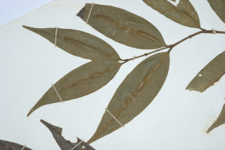
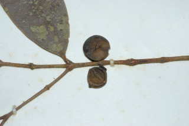
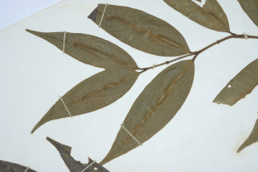
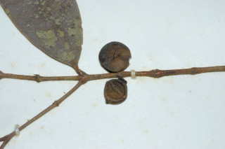

Large shrubs ca. 4 m tall.
ಅಂದಾಜು 4 ಮೀ. ಎತ್ತರದವರೆಗೆ ಬೆಳೆಯುವ ದೊಡ್ಡ ಪೊದೆಗಳು.
ഏതാണ്ട് 4 മീറ്റര് വരെ ഉയരമുളള വന് കുറ്റിച്ചെടികള്.
பெரிய குத்துச்செடி 4 மீ. உயரம் வரை வளரக்கூடியது.
Branchlets subterete, slender, glabrous.
ಕಿರುಕೊಂಬೆಗಳು ಉಪದುಂಡಾಗಿದ್ದು ತೆಳುವಾಗಿರುತ್ತವೆ ಮತ್ತು ರೋಮರಹಿತ --ವಾಗಿರುತ್ತವೆ.
അരോമിലമായ, നേര്ത്ത ഉപശാഖകള്, ഏതാണ്ട് ഉരുണ്ടതാണ്.
சிறிய நுனிக்கிளைகள் குறுக்குவெட்டுத் தோற்றத்தில் வளையமானது, மெல்லியது, உரோமங்களற்றது.
Leaves simple, opposite, decussate; petioles 0.4 cm, planoconvex in cross section, glabrous; lamina 6-10 x 2-3 cm, lanceolate, apex gradually acuminate, base acute, margin entire; midrib slightly canaliculate; secondary_nerves obscurely visible, parallel and joining into intramarginal_nerve; tertiary_nerves obscure.
ಎಲೆಗಳು ಸರಳವಾಗಿದ್ದು, ಕತ್ತರಿಯಾಕಾರದ ಅಭಿಮುಖ ಜೋಡನಾ ವ್ಯವಸ್ಥೆಯ -ಲ್ಲಿರುತ್ತವೆ; ತೊಟ್ಟುಗಳು 0.4 ಸೆಂ.ಮೀ. ಉದ್ದಹೊಂದಿದ್ದು ರೋಮರಹಿತವಾಗಿದ್ದು ಅಡ್ಡ ಸೀಳಿದಾಗ ಸಪಾಟ ಪೀನ ಮಧ್ಯದ ಆಕಾರದಲ್ಲಿರುತ್ತವೆ; ಪತ್ರಗಳು 6-10X 2 –3 ಸೆಂ.ಮೀ. ಗಾತ್ರ ಹೊಂದಿದ್ದು ಭರ್ಜಿಯ ಆಕಾರದಲ್ಲಿರುತ್ತವೆ;ಪತ್ರಗಳು ಹಂತ ಹಂತವಾಗಿ ಕ್ರಮೇಣ ಚೂಪಾಗುವ ತುದಿ ಮತ್ತು ಚೂಪಾದ ಬುಡ ಹೊಂದಿರುತ್ತವೆ; ಅಂಚು ನಯವಾಗಿರುತ್ತದೆ;ಮಧ್ಯನಾಳ ಲಘುವಾದ ಕಾಲುವೆ ಗೆರೆಗಳ ಸಮೇತವಿರುತ್ತದೆ; ಎರಡನೇ ದರ್ಜೆಯ ನಾಳಗಳು ಮಸುಕಾಗಿ ಕಾಣುವಂತಿದ್ದುಸಮಾಂತರದಲ್ಲಿರುತ್ತವೆ ಹಾಗೂ ಮತ್ತು ಅಂಚಿನ ನಾಳಗಳನ್ನು ಸೇರುತ್ತವೆ;ಮೂರನೇ ದರ್ಜೆಯ ನಾಳಗಳು ಅಗೋಚರ.
ലഘുവായ ഇലകള് സമ്മുഖ, ഡെക്കുസേറ്റ് ക്രമത്തിലാണ്; ഛേദത്തില് ഒരുഭാഗം പരന്നും മറുഭാഗം ഉരുണ്ടുമിരിക്കുന്ന ഘടനയുളള, അരോമിലമായ ഇലഞെട്ടിന് 0.4 സെ.മീ നീളം; പത്രഫലകത്തിന് 6 സെ.മീ മുതല് 10 സെ.മീ വരെ നീളവും 2 സെ.മീ മുതല് 3 സെ.മീ വരെ വീതിയും കുന്താകൃതിയുമാണ്, പത്രാഗ്രം സാവധാനം ദീര്ഘാഗ്രമാകുന്നു, പത്രാധാരം നിശിതമാണ്, അരികുകള് അവിഭജിതം; മുഖ്യസിര ചെറുതായി ചാലുളളതാണ്; സമാന്തരമായി പോയി, അന്തര്സീമാന്ത സിരയുമായി ചേരുന്ന ദ്വിതീയ ഞരമ്പുകള് അസ്പഷ്ടമായി മാത്രം കാണാവുന്നതാണ്; ത്രിതീയ ഞരമ്പുകള് അവ്യക്തമാണ്.
இலைகள் தனித்தவை, எதிரடுக்காமானவை, குறுக்குமறுக்குமானவை; இலைக்காம்பு 0.4 செ.மீ, குறுக்குவெட்டுத் தோற்றத்தில் பிளேனோகான்வக்ஸ், உரோமங்களற்றது; இலை அலகு 6-10 X 2-3 செ.மீ., ஈட்டி வடிவானது, அலகின் நுனி நீண்ட அதிக்கூரியது, அலகின் தளம் கூரியது, அலகின் விளிம்பு முழுமையானது; மையநரம்பு மேற்புறத்தில் அலகின் பரப்பைவிட பள்ளமானது; இரண்டாம் நிலை நரம்புகள் சிறிது தெளிவற்றது, ஒன்றுக்கொன்று இணையானவை மற்றும் இண்ட்ராமார்ஜினல் (விளிம்பு நரம்பு) நரம்புடன் இணைந்தவை; மூன்றாம் நிலை நரம்புகள் தெளிவற்றது.
Flowers in axillary or lateral fascicles, few flowered, sessile; disk rays faint.
ಹೂಗಳು ತೊಟ್ಟುರಹಿತವಾಗಿದ್ದು ಅಕ್ಷಾಕಂಕುಳಿನಲ್ಲಿನ ಅಥವಾ ಪಾರ್ಶ್ವದಲ್ಲಿನ ಕೆಲವು ಹೂಗಳುಳ್ಳ ಗುಚ್ಛಗಳಲ್ಲಿರುತ್ತವೆ;ಬಿಂಬದ ರೇಖೆಗಳು ಸೂಕ್ಷ್ಮವಾಗಿರುತ್ತವೆ.
അവ്യക്തമായ ഡിസ്ക് റേയുമുളള, പൂക്കള്, ഏതാനും എണ്ണമുളള കക്ഷീയമോ പാര്ശ്വസ്ഥമോ ആയ കൂട്ടങ്ങളായുണ്ടാകുന്നു.
மலர்கள் இலைக்கோணங்கள் அல்லது தண்டின் பக்கவாட்டில் தொகுப்பாக காணப்படுபவை, குறைந்த எண்ணிக்கையில் மலர்கள் கொண்ட தொகுப்பு, காம்பற்றவை; மலர்தண்டு கிண்ணத்திலுள்ள கோடு (ரேய்) தெளிவற்றது.
Berry, globose, yellow; seed 1.
ಬೆರ್ರಿಗಳು ಗೋಳಾಕಾರದ ಹೊಂದಿದ್ದು ಹಳದಿ ಬಣ್ಣದವುಗಳಾಗಿದ್ದು ಒಂದು ಬೀಜವನ್ನೊಳಗೊಂಡಿರುತ್ತದೆ.
ഒറ്റ വിത്തുളള കായ, മഞ്ഞ നിറത്തിലുളള ഗോളാകാര ബെറിയാണ്.
முழுச்சதைகனி (பெர்ரி), கோளவடிவானது, மஞ்சள் நிறமானது; விதை ஒன்றுடையது.
 


